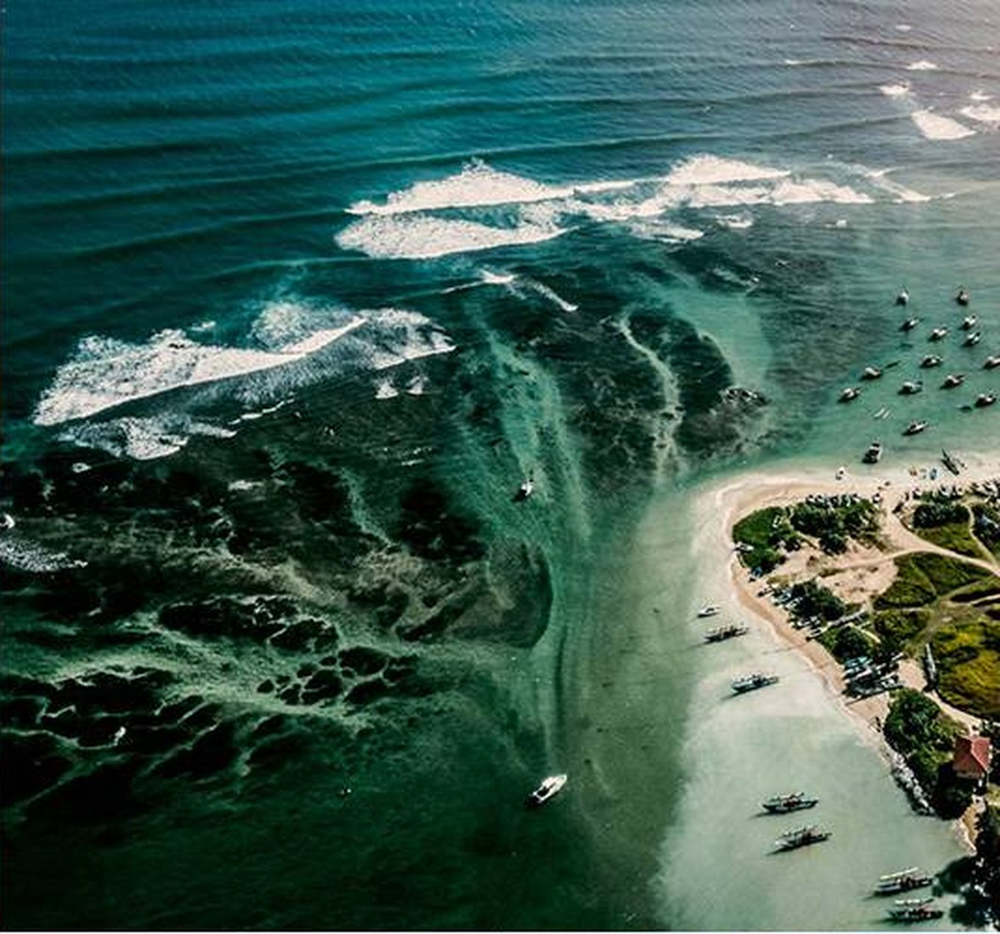
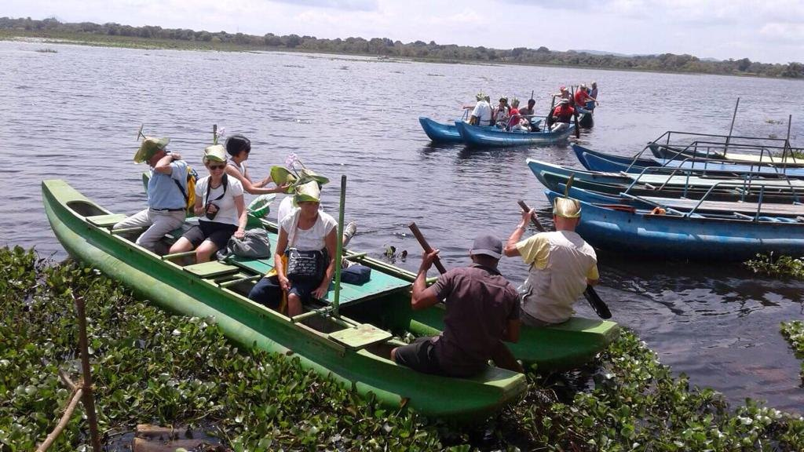

Surfing
Lessons and board hire for every level, with a local instructor who knows the breaks.
- Where: Weligama, Arugam Bay, Hikkaduwa
- Season: South coast Nov to Apr, Arugam Bay May to Sep
- Level: Beginners to advanced
Historic clubs, scenic hill courses and a seaside resort course, mixed with sightseeing and rest days.
The island has a long golfing tradition, from colonial-era clubs to a modern resort course. Mix a round or two with temples, tea country and the coast.
Good to know: Courses differ in dress code and visitor rules, and tee times can fill up, so we confirm everything for your dates. Mornings are the coolest time to play.

Lessons and board hire for every level, with a local instructor who knows the breaks.

Coral reefs, shipwrecks and turtle bays, led by certified instructors.

Kelani River rapids and calm-water paddles, with safety gear and trained crews.

Sunrise climbs, tea-estate trails and Knuckles and Horton Plains walks with an expert guide.

Jet skis, banana boats and parasailing on the west and south coasts.

Jeep safaris in Yala, Udawalawe and Minneriya for leopards, elephants and birds.
We also partner with the Barmy Army cricket supporters and the German Volleyball Federation for sports travel, and have been the country representative of the UK Pro Surf Association since the early 90s.
Tell us your dates, group size and interests. We reply within one working day, and no payment is needed to send a request.